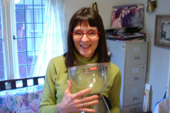

Appliance adventures, part 2

I have been a caffeine addict since long before Leland was born, and have brewed coffee in all manner of coffee makers, from the pyrex percolators of my youth, through the hour-glass shaped Chemex of my hippie days, to my current favorite, the Bodum Santos. Along the way there have been detours into French presses and various versions of Mr. Coffee and his ilk, along with the tried and true Melitta.
And although I love the Santos for its unique look and vacuum brewing method, as well as the great cup of coffee it makes, I’m annoyed that its lid broke so soon after I got it. I think a hundred dollar appliance should be sturdier. I was going to order a replacement lid until I noticed that the little plastic tabs that you snap the lid into seem to have gotten mashed over onto their sides. When I tried to straighten them out one of them snapped off, so there goes that plan. Now I would have to replace the whole pot. And this morning for the first time I actually brewed a pot without snapping the little filter in. Have you ever done that, Leland? It makes a God-awful mess! You get a volcanic eruption of hot coffee and grounds all over your counter, and they seem to have worked their way into the electrical innards of the bottom of the pot. Let’s hope I didn’t cause permanent damage.
Comments
My lid broke too! So now we just use it without the lid when we use it at all, which isn’t as often as I’d like because it takes up so much counter space. Once we have our townhouse maybe I can leave it out all the time.
I too have tried at least five different ways of making coffee, but I always come back to the number four filter over a carafe. It’s the only way where I feel like I have total control over what the coffee will taste like.
I also really like stovetop espresso makers, but they can be annoying to clean.
The trouble with the filter over the carafe method is that it can take so darn long. For anyone who doesn’t know and is following this discussion with any interest we’re talking about the #4 Melitta filter. IMHO, a #1 or #2 filter cone over a single cup is almost as fast as a cup of instant, so there’s no excuse for instant coffee, really.
If anyone clicked on the Chemex link above they may have been surprised to find themselves transported back to the sixties! Chemex has hung onto the old font, possibly designed by Peter Max…It’s a handsome carafe, with its wooden collar encircled by that rough-hewn looking leather thong, the whole thing held together with a big wooden bead. One problem with the Chemex is that nothing really held the filter in except the narrowness of the neck, and once in awhile the whole wet mess of grounds would slither through into the dripping coffee below. Then you’d have a big mess on your hands!
Mom
I guess I think it’s fast because I use an electric kettle. I used to have the Bodum Ibis, which tragically died after one year. Now we have this crazy Melitta thing that looks cool but isn’t as fast. Still, though, it’s way faster than a traditional kettle. And the time it takes to clean the Santos is ridiculous.
It isn’t the boiling that’s so time-consuming, it’s the pouring and waiting for the dripping through the filter over and over again!
All I do to clean the Santos is rinse out the pot, and dump the grounds down the garbage disposal, then swish the detergent wand around the top part. And sometimes Poppy cleans it for me. :)
Must be nice to have a garbage disposal. All I do to clean up is throw away the coffee. Boom. I really don’t think it’s time consuming at all to pour water through. Maybe it has to do with the number of holes in your filter. I have four, and it goes pretty quickly.
Add a comment